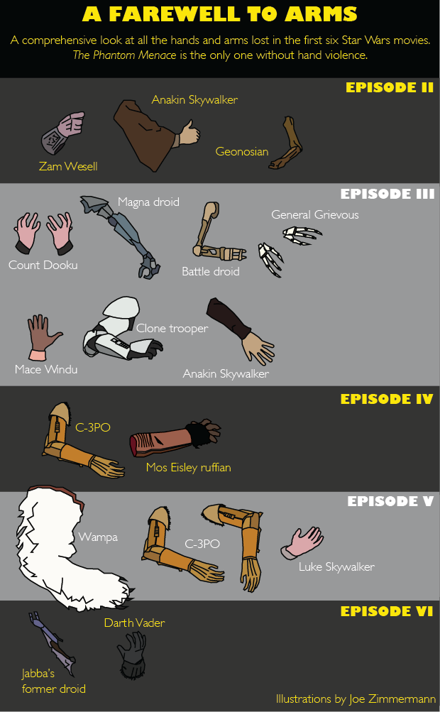
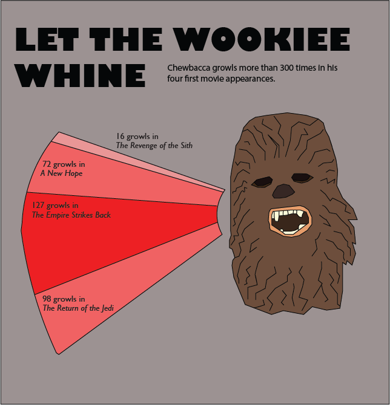

Stormtroopers are Terrible Soldiers
Surveying a slaughter of Jawas in A New Hope, Obi-Wan Kenobi argues that Stormtroopers must have been responsible, because the laser blasts were too accurate for Sandpeople to have done the deed. "Only Imperial stormtroopers are so precise," he said.
LOL. Sorry, Obi-Wan, but you're wrong. We counted each and every laser blast — hits and misses — in every movie and found that Stormtroopers miss at a higher rate than all but two characters. They are terrible shots.
Stormtroopers should be frightening. They appear devoid of emotion. And they carry huge guns and work for the Galactic Empire, an institution that, as the opening crawl makes clear, is plainly “evil.”
But in the vast majority of ground battles, they fail to hit a single rebel.
In their first appearance, attacking Tantive IV — the ship carrying Leia, R2-D2 and C-3PO — stormtroopers are fairly accurate, crushing the rebel troops and actually hitting their targets nine times, while missing 14 times. From there, we only see them hit three more targets in the rest of the series!
Though their poor performance on the Death Star could be chalked up to letting the Millennium Falcon crew escape so the Empire could follow them to the secret Rebel Alliance base, their record in following scenes suggest this is not an unusual circumstance.
In The Empire Strikes Back, they have an especially bad streak, taking at least 66 shots that miss and only hitting someone once — almost off-screen, when it's implied they shoot C-3PO.
Their accuracy rate — one in 20 of their shots hit their target — is dismal compared to the Rebel Alliance, who connect about once out of every three shots.
However, they don't fare all that much worse than other assorted villains. At least they're better than Boba Fett, who never actually hits anyone before falling into the Sarlacc pit to be slowly digested for 1,000 years.
Generally, it's not so much that stormtroopers are bad shots; it's that the bad guys are. In typical heroic-movie fashion, they're strikingly less adept at anything than the good guys. And since the good guys have to make it out of harrowing battles alive, it's necessary that the people shooting at them miss a comical number of times.
Star Wars Gives More Prominence to Robots Than Women
Star Wars is not a franchise with a shining history of gender equality. In the original trilogy, there's Princess Leia, and essentially no other meaningful women.
Leia is a tough female character — her problematic slave outfit notwithstanding — and she’s a central character in the original movies, fighting alongside Luke Skywalker and Han Solo. However, looking at the number of lines of dialogue for character, it’s clear that Luke and Han were always meant to be far more prominent. Not only do both of them speak far more than Leia in each movie, C-3PO often had more lines, too.
This is consistent among all the Star Wars films, where the number of lines for female characters tends to fall somewhere between aliens and robots, dwarfed by the massive line counts for male characters.
Characters Lose Limbs in Every Movie Except 'The Phantom Menace'
The Star Wars galaxy is a dangerous place, where characters are constantly losing arms or hands. Five of the six Star Wars movies each feature this particular brand of dismemberment, suggesting George Lucas is a little too obsessed with limb violence. Aside from these unwilling amputations, Luke and Leia are both shot in the hand or arm, and his script has Han warn that Wookiees apparently “pull people's arms out of their sockets” when they lose at space board games.

Obi-Wan leads the pack, cutting off the most hands (7). C-3PO and Anakin/Darth Vader tied for most hands lost: both have these limbs severed an unfortunate three times in the series.
However C-3PO looks like he might have the upper hand in this arms race, as trailers for The Force Awakens show him with a distinctive red appendage, and one rarely needs a new arm unless they’ve lost the old one.
The Prequels are More Violent Than Most of the Original Series, Except for 'Return of the Jedi'
As titles go, Star Wars is fairly descriptive. These are quite literally war movies taking place in space. As such, there’s no shortage of carnage.
The body count in each of these movies is high. The prequels are particularly violent. However, The Empire Strikes Back, usually considered the darkest of the original trilogy, is actually fairly peaceful, with few deaths on-screen.
In both of these graphics, note that we're not counting deaths that take place off-screen. Otherwise, the title of most murderous would probably go to Grand Moff Tarkin, who orders the Death Star to destroy Alderaan — population 2 billion, according to Wookieepedia — in Episode IV.
In terms of on-screen kills, Darth Vader has the most, as you'd expect, followed by Luke.
Chewbacca Makes a Lot of Noise
We have no idea what Chewbacca is saying when he unleashes one of his signature growls, derived from recordings of badgers, lions, bears, seals and other animals (according to The Atlantic). At least Han understands him.

Star Wars Was Filmed on Five out of Seven Continents
Star Wars is truly a global franchise. Not only has it attracted huge worldwide audiences, the first six films were filmed on location in five continents — Asia, North America, Europe, Africa and Australia.
George Lucas skipped only two — Antarctica and South America. The Amazon rainforest could have provided a good backdrop for Yoda's swampy Degobah planet, instead of the soundstage in London where those scenes were shot. And Antarctica would have been a perfect stand-in for the ice planet Hoth, but it was filmed in Norway.
On this map, we've also included the shooting locations for Episode VII.
You are More Likely to be Born with 11 Toes than Survive a Night on Icy Hoth
"Never tell me the odds," Han screams after C-3PO tells him the chances of surviving a trip through an asteroid field in Episode V. With apologies to Han, here are the odds of three important moments in the original trilogy.
According to R2-D2, as translated by C-3PO, the odds of surviving a night on the planet Hoth are 1 out of 725. (Episode V)
You have a better chance of being born with 11 fingers and toes, known as polydactylism, with odds of 1 out of 500, than surviving a night on Hoth. The chances of being killed while crossing the street are also better than surviving a night on Hoth, at 1 out of 701.
1 : 725

According to C-3PO, the odds of successfully navigating the Hoth asteroid belt are 1 out of 3,720. (Episode V)
You have a better chance of being injured while mowing the lawn, with odds of 1 out of 3,623, than navigating the asteroid belt. The chances of falling and dying in the shower are also better than navigating the asteroid belt, at 1 out of 2,232.
1 : 3,720

According to Han, the odds of the Death Star killshot are 1 out of 1,000,000. (Episode IV)
You have a better chance of winning an Olympic gold medal in your lifetime, with odds of 1 out of 662,000. The chances of being killed by lightning or a meteorite strike are higher than destroying the Death Star as well, at 1 out of 700,000.
1 : 1,000,000

Sources: Star Wars, NBCNews, Review Journal and Funny2 Odds